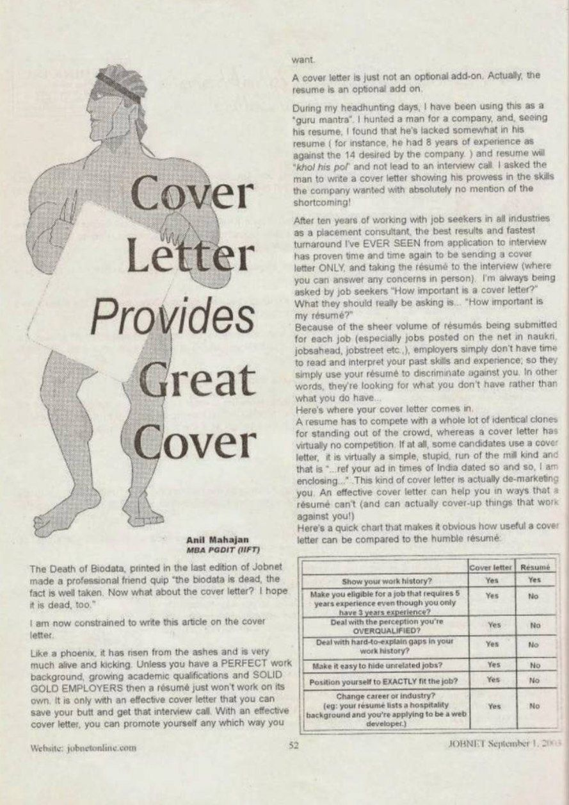
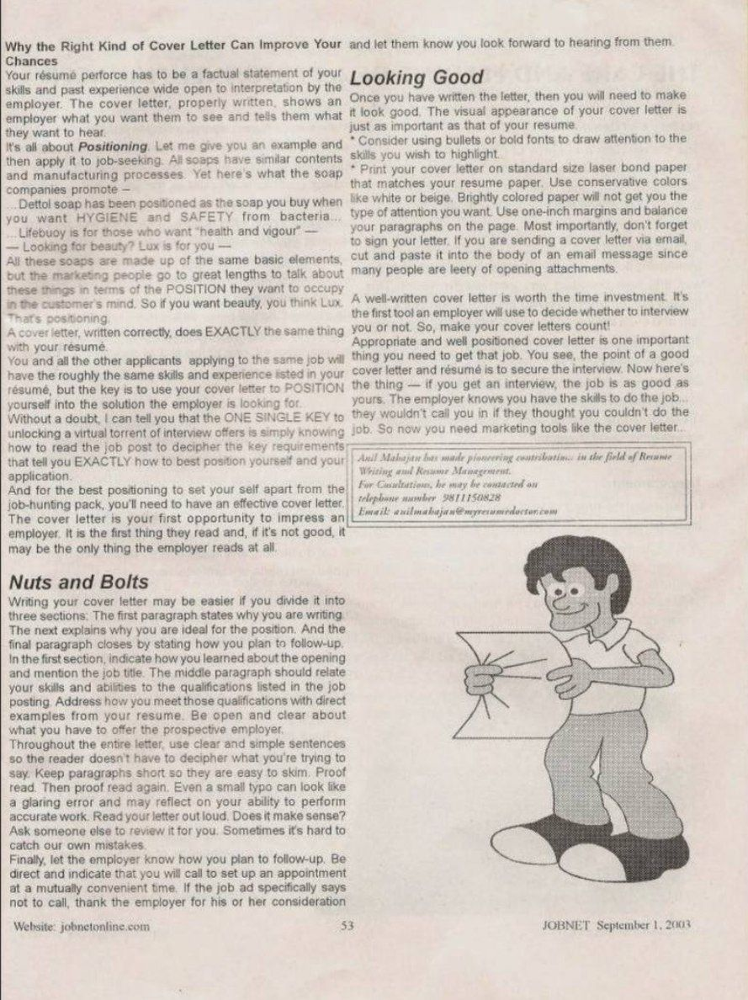

JOBNET Career Intelligence
The First Impression That Opens Doors
About This Article
In this insightful article, Anil Mahajan highlighted the importance of the cover letter as a powerful professional introduction rather than a routine attachment accompanying a resume.
The article explored how candidates can use written communication to create the right first impression, establish relevance and demonstrate why they are the right fit for an opportunity.
Although recruitment has evolved significantly since 2003, the principle remains unchanged: how you introduce yourself often determines whether your profile receives serious consideration.
Original Publication
Scanned pages from the original printed publication.

JOBNET September 2003 — Page 1

JOBNET September 2003 — Page 2
Article Transcript
Originally published in JOBNET
The Death of Biodata, printed in the last edition of Jobnet made a professional friend quip "the biodata is dead, the fact is well taken. Now what about the cover letter? I hope it is dead, too." I am now constrained to write this article on the cover letter.
Like a phoenix, it has risen from the ashes and is very much alive and kicking. Unless you have a PERFECT work background, growing academic qualifications and SOLID GOLD EMPLOYERS then a résumé just won't work on its own. It is only with an effective cover letter that you can save your butt and get that interview call. With an effective cover letter, you can promote yourself any which way you want.
During my headhunting days, I have been using this as a "guru mantra". I hunted a man for a company, and, seeing his resume, I found that he lacked somewhat in his resume (for instance, he had 8 years of experience as against the 14 desired by the company) and the resume will "khol his pol" and not lead to an interview call. I asked the man to write a cover letter showing his prowess in the skills the company wanted with absolutely no mention of the shortcoming!
After ten years of working with job seekers in all industries as a placement consultant, the best results and fastest turnaround I've EVER SEEN from application to interview has proven time and time again to be sending a cover letter ONLY, and taking the résumé to the interview (where you can answer any concerns in person). I'm always being asked by job seekers "How important is a cover letter?" What they should really be asking is… "How important is my résumé?"
Because of the sheer volume of résumés being submitted for each job (especially jobs posted on the net in naukri, jobsahead, jobstreet etc.), employers simply don't have time to read and interpret your past skills and experience; so they simply use your résumé to discriminate against you. In other words, they're looking for what you don't have rather than what you do have…
Here's where your cover letter comes in.
A resume has to compete with a whole lot of identical clones for standing out of the crowd, whereas a cover letter has virtually no competition. If at all, some candidates use a cover letter, it is virtually a simple, stupid, run of the mill kind and that is "…ref your ad in Times of India dated so and so, I am enclosing…". This kind of cover letter is actually de-marketing you.
An effective cover letter can help you in ways that a résumé can't (and can actually cover-up things that work against you!)
Your résumé perforce has to be a factual statement of your skills and past experience wide open to interpretation by the employer. The cover letter, properly written, shows an employer what you want them to see and tells them what they want to hear.
Let me give you an example and then apply it to job-seeking. All soaps have similar contents and manufacturing processes. Yet here's what the soap companies promote — Dettol soap has been positioned as the soap you buy when you want HYGIENE and SAFETY from bacteria. Lifebuoy is for those who want "health and vigour." Looking for beauty? Lux is for you.
All these soaps are made up of the same basic elements, but the marketing people go to great lengths to talk about these things in terms of the POSITION they want to occupy in the customer's mind. So if you want beauty, you think Lux. That's positioning.
A cover letter, written correctly, does EXACTLY the same thing with your résumé. You and all the other applicants applying to the same job will have roughly the same skills and experience listed in your résumé, but the key is to use your cover letter to POSITION yourself into the solution the employer is looking for.
Without a doubt, I can tell you that the ONE SINGLE KEY to unlocking a virtual torrent of interview offers is simply knowing how to read the job post to decipher the key requirements that tell you EXACTLY how to best position yourself and your application.
And for the best positioning to set yourself apart from the job-hunting pack, you'll need to have an effective cover letter. The cover letter is your first opportunity to impress an employer. It is the first thing they read and, if it's not good, it may be the only thing the employer reads at all.
Writing your cover letter may be easier if you divide it into three sections: The first paragraph states why you are writing. The next explains why you are ideal for the position. And the final paragraph closes by stating how you plan to follow-up.
In the first section, indicate how you learned about the opening and mention the job title. The middle paragraph should relate your skills and abilities to the qualifications listed in the job posting. Address how you meet those qualifications with direct examples from your resume. Be open and clear about what you have to offer the prospective employer.
Throughout the entire letter, use clear and simple sentences so the reader doesn't have to decipher what you're trying to say. Keep paragraphs short so they are easy to skim. Proof read. Then proof read again. Even a small typo can look like a glaring error and may reflect on your ability to perform accurate work. Read your letter out loud. Does it make sense?
Ask someone else to review it for you. Sometimes it's hard to catch our own mistakes.
Finally, let the employer know how you plan to follow-up. Be direct and indicate that you will call to set up an appointment at a mutually convenient time. If the job ad specifically says not to call, thank the employer for his or her consideration and let them know you look forward to hearing from them.
Once you have written the letter, then you will need to make it look good. The visual appearance of your cover letter is just as important as that of your resume.
Consider using bullets or bold fonts to draw attention to the skills you wish to highlight. Print your cover letter on standard size laser bond paper that matches your resume paper. Use conservative colors like white or beige. Brightly colored paper will not get you the type of attention you want. Use one-inch margins and balance your paragraphs on the page. Most importantly, don't forget to sign your letter. If you are sending a cover letter via email, cut and paste it into the body of an email message since many people are leery of opening attachments.
A well-written cover letter is worth the time investment. It's the first tool an employer will use to decide whether to interview you or not. So, make your cover letters count!
Appropriate and well positioned cover letter is one important thing you need to get that job. You see, the point of a good cover letter and résumé is to secure the interview. Now here's the thing — if you get an interview, the job is as good as yours. The employer knows you have the skills to do the job… they wouldn't call you in if they thought you couldn't do the job. So now you need marketing tools like the cover letter…
I have been writing regularly in Indian job journals since 2003 and have made pioneering contributions in the field of Resume Writing, Resume Management and Acing successfully Corporate Interviews in India.
Then & Now
When this article was published in 2003, cover letters were an essential part of almost every job application. Today, while many online application systems no longer require a traditional cover letter, the purpose it served has become even more important.
The modern cover letter has evolved into several forms:
Regardless of the format, the objective remains the same: communicate value before discussing credentials. Professionals who clearly articulate why they are relevant, what they have accomplished and how they can contribute are far more likely to attract attention than those who simply submit a resume.
How the Concept Has Evolved
Then — 2003
Today — 2026
Key Takeaways
Practical Advice
In today's competitive market, every interaction — whether an email, LinkedIn message or executive summary — functions as a modern cover letter.
The professionals who communicate with clarity, purpose and authenticity consistently create stronger opportunities.
Looking Ahead
Technology continues to transform recruitment, but one principle remains constant:
A well-crafted introduction builds credibility, creates interest and starts professional conversations that often lead to career opportunities. That insight formed the foundation of this article in 2003 and continues to guide successful professionals today.
About the Author
Continue Reading